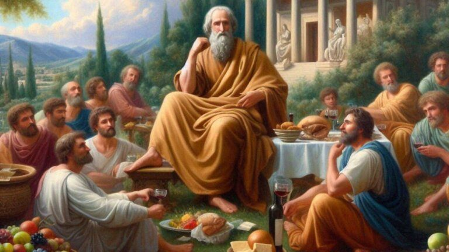

¿Qué es el Hedonismo?
Definición
El hedonismo es una corriente filosófica que sostiene que el placer es uno de los bienes más importantes para el ser humano y que influye en el valor de sus acciones. Su nombre proviene del griego hēdonḗ, que significa "placer". Según esta filosofía, las personas buscan naturalmente aquello que les genera bienestar, satisfacción y felicidad, evitando el dolor y el sufrimiento. Sin embargo, el hedonismo no consiste únicamente en buscar placeres materiales o momentáneos; algunas de sus corrientes, como la propuesta por Epicuro, enseñan que la verdadera satisfacción se alcanza mediante una vida equilibrada, moderada y libre de excesos.
Origen
El hedonismo surgió en la Antigua Grecia alrededor del siglo IV a. C., cuando diversos filósofos comenzaron a preguntarse cuál era el propósito de la vida humana. Durante este período aparecieron dos importantes escuelas: la escuela cirenaica, fundada por Aristipo de Cirene, quien defendía la búsqueda del placer inmediato, y la escuela epicúrea, creada por Epicuro de Samos, quien proponía alcanzar una felicidad duradera mediante la moderación, la amistad y la tranquilidad del espíritu. Más tarde, durante la Edad Media, esta corriente fue criticada por gran parte del pensamiento cristiano, que consideraba que el exceso de placer podía alejar a las personas de la vida espiritual.
Principales representantes
Epicuro de Samos (341–270 a. C.) Fue el principal representante del hedonismo epicúreo. Enseñaba que la verdadera felicidad no dependía de los lujos ni de los placeres excesivos, sino de llevar una vida sencilla, cultivar la amistad, mantener la paz interior y evitar el sufrimiento innecesario.
Aristipo de Cirene (435–356 a. C.) Fundador de la escuela cirenaica, defendía que el placer inmediato era el bien más importante para el ser humano. Consideraba que las personas debían aprovechar los placeres presentes, siempre actuando con inteligencia y sin perder el control de sus decisiones.
Diferencia entre placer y felicidad
Placer: Es una sensación agradable o de satisfacción que suele ser inmediata y, en muchos casos, temporal. Puede experimentarse al comer un alimento favorito, jugar videojuegos, escuchar música o recibir un regalo.
Felicidad: Es un estado de bienestar más profundo y duradero que se construye con el tiempo. Se relaciona con tener metas, buenas relaciones personales, equilibrio emocional y vivir de acuerdo con los propios valores.
Ejemplos de la vida cotidiana
1. Comer un helado en un día caluroso: El placer es inmediato, pero la felicidad puede depender de disfrutarlo con amigos o familiares.
2. Escuchar música relajante después de un día estresante: El placer es la sensación de alivio, mientras que la felicidad puede surgir al mantener un equilibrio emocional a largo plazo.
3. Practicar un deporte o actividad física: El placer puede ser la satisfacción de completar un entrenamiento, mientras que la felicidad se relaciona con mantener una vida saludable y sentirse bien consigo mismo.
4. Pasar tiempo con seres queridos: El placer puede ser la alegría de compartir momentos juntos, mientras que la felicidad se construye a través de relaciones sólidas y significativas.